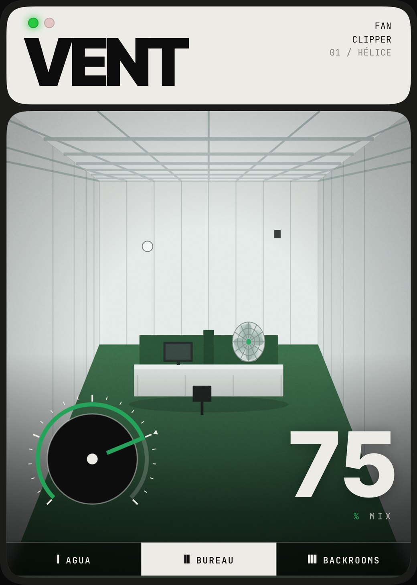
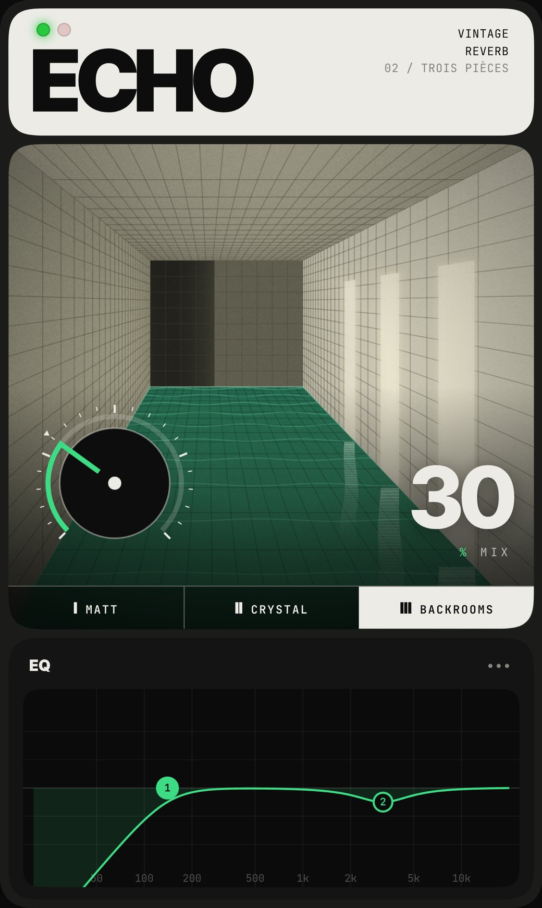
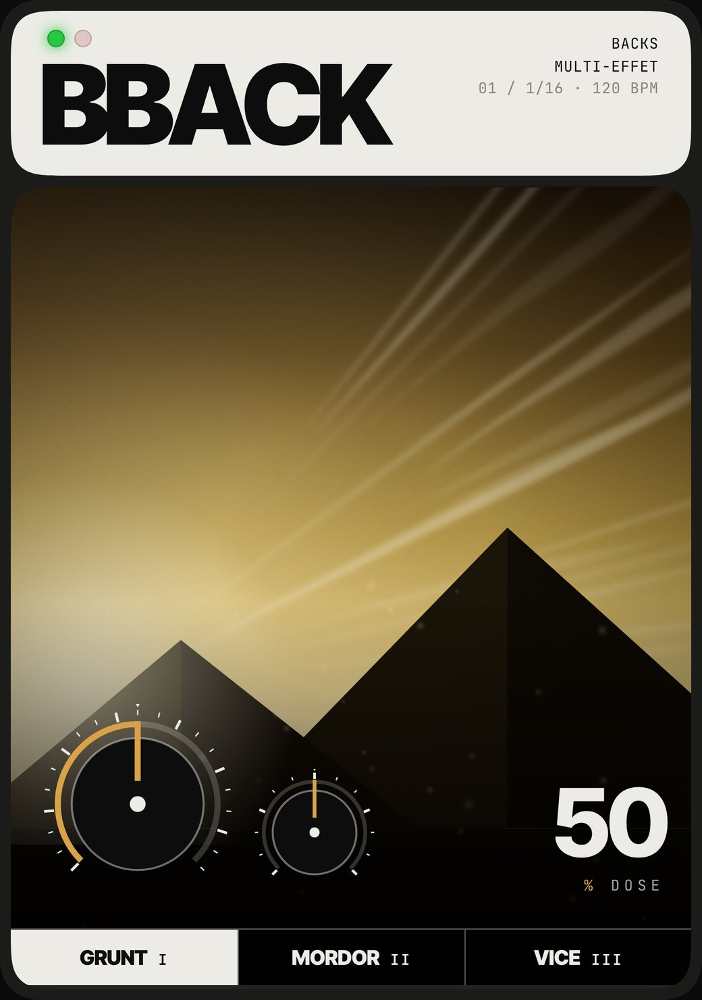

AUDIOGEN
Arrête de régler.
Mixe.

VENT
Un clipper qui range les basses avant de taper.
La plupart des clippers écrasent tout le spectre en même temps, et c'est le bas qui mange la réserve. VENT sépare le grave du reste, le clippe à part, puis lui rend le gain qu'il lui a pris : les crêtes sont matées, le niveau ne bouge pas, et le haut du spectre reste intact.
- Réglage
- Un potard de mix, de 0 à 100
- Latence
- Aucune
- Format
- VST3, Windows 64 bits

ECHO
Trois pièces, et un plateau sous le capot.
La queue est construite sur le plateau en huit de Jon Dattorro, publié en 1997, l'architecture de référence des reverbs à boucle d'allpass. Longueurs de lignes, coefficients de diffusion et prises de sortie sont ceux du papier, recalés sur ta fréquence d'échantillonnage. Un égaliseur dynamique est posé dessus, pour creuser la reverb là où la voix passe.
- Réglage
- Un potard de mix, plus l'EQ si tu y tiens
- Pièces
- T60 mesuré, niveau égalisé entre les trois
- Format
- VST3, Windows 64 bits

BBACK
Pour mettre les backs derrière le lead, d'un geste.
Quatre étages dans l'ordre : couleur, filtre, delay et stéréo. Le filtre est le plus important : c'est lui qui recule les voix sans les rendre sourdes. Le delay se cale tout seul sur le tempo de ton projet, sans rien à régler. Trois scènes selon ce que tu doubles : rap, crié, ou R&B.
- Réglages
- Dose et panoramique
- Tempo
- Lu dans l'hôte, delay synchronisé
- Format
- VST3, Windows 64 bits
Le principe
Un plugin qui demande vingt minutes de réglage avant de sonner n'a pas fait son travail. Celui-là, on l'a fait en amont.
Un potard
Un seul réglage qui compte, de 0 à 100. À 0, le son qui ressort est exactement celui qui rentre. Pas « presque », exactement.
Trois pièces
Chaque plugin a trois caractères, pensés pour une matière précise. On en choisit un, on ne le bricole pas.
Réglé à la mesure
Les temps de réverbération, les taux de distorsion et les niveaux ne sont pas posés à l'oreille : ils sont mesurés, et vérifiés à chaque version.
Même niveau, toujours
Changer de pièce ne change pas le volume. Ce que tu entends, c'est la couleur, pas un gain qui t'embrouille.
Questions
- Avec quels logiciels ça marche ?
- Avec tout hôte VST3 64 bits sous Windows : FL Studio, Ableton Live, Cubase, Reaper, Studio One, Bitwig, Mixcraft.
- Et sur Mac ?
- Pas encore. Les versions macOS, en VST3 et en AU, signées et notarisées par Apple, sont en préparation.
- Qu'est-ce qui se passe quand le potard est à zéro ?
- Rien. Le son qui sort est exactement celui qui entre, à l'échantillon près. C'est vérifié à chaque version, pas juste promis.